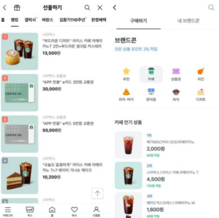

경제 뉴스
"토스선 별다방도 밀렸다"… 스타벅스 누른 커피 기프티콘은?
모바일 선물의 대표격인 커피 e쿠폰(기프티콘) 시장서 메가커피가 스타벅스를 눌렀다. 28일 현재 토스 브랜드콘 카페 인기 상품 순위에서 메가커피가 1위를 유지하고 있는 것. 2위는 스타벅스, 3위는 매머드익스프레스다. 이는 스타벅스가 1위를 줄곧 유지해 온 카카오톡 선물하기 랭킹과는 차이가 있다.
스타벅스는 국내 1위 커피 전문점이다. 매장 수도 많고 선호도가 높아 모바일 상품권이 잘 팔린다. 부담 없는 선물로 인기를 모은 스타벅스 e쿠폰은 카카오톡 선물하기의 '얼굴'로 통한다.
그런 스타벅스가 토스에서 메가커피에 밀린 이유는 뭘까. 토스 브랜드콘은 10~20대 사용자가 많다. 토스 관계자는 "서비스 초반부터 메가커피는 카페 인기 상품 1위였다"며 "토스 이용자층이 젊기 때문에 가성비(가격 대비 성능)가 좋은 메가커피 결제건수가 많은 것으로 보인다"고 말했다.
메가커피는 전국 2400여개 오프라인 매장을 두고 있다. 상대적으로 낮은 가격에 큰 용량의 음료를 판매한다. 트렌드를 반영한 신메뉴 출시도 잦은 편으로 호응을 얻고 있다. 메가커피에 따르면 지난해 메가커피의 e쿠폰 판매액은 전년 대비 3배가량 증가했다. 지난해 말 기준 스타벅스, 투썸 플레이스에 이어 커피 브랜드 모바일 e쿠폰 시장 3위 자리에 올랐다.
메가커피 관계자는 "메가커피는 MZ세대(1981~1995년 출생한 밀레니얼(M) 세대와 1996~2010년 출생한 Z세대를 통칭) 사이에서 선물하고 싶은 브랜드로 떠오르고 있다"며 "합리적인 가격에 다양한 음료와 간식으로 개인의 취향을 충분히 고려할 수 있고 전국 2400여개에 달하는 가맹점에서 손쉽게 쿠폰을 사용할 수 있는 접근성 때문에 이런 성과를 낸 것으로 보인다"고 말했다.